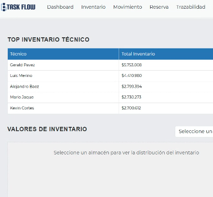

Próximo Lanzamiento
Optimizando Procesos, Simplificando Operaciones
TaskFlow es una plataforma integral diseñada para que las empresas optimicen sus procesos y simplifiquen sus operaciones, centralizando en un solo lugar la gestión de inventarios, activos fijos y órdenes de trabajo. Pensada para organizaciones que buscan trazabilidad completa y automatización inteligente, TaskFlow transforma la manera en que supervisas y controlas tus operaciones diarias.
"Descubre TaskFlow antes que nadie. ¡Sé un cliente piloto exclusivo!"
TaskFlow estará disponible en abril de 2025
Funcionalidades de TaskFlow
Gestión de Inventarios
- Inventarios ilimitados de piezas y suministros
- Control de niveles mínimos y máximos
- Ciclo de inventario periódico
- Gestión de herramientas (tool crib)
- Planes y manuales cargados por activo
Gestión de Activos Fijos
- Compatibilidad con NFC
- Gestión multi-sitio
- Priorización por criticidad de activos
- Registro de vida útil y depreciación
- Trazabilidad completa del ciclo de vida
Análisis y Reportes
- Dashboard de rendimiento en tiempo real
- Reportes estándar configurables
- Análisis avanzados por módulo
- Insights de órdenes de trabajo
- Indicadores clave personalizados (KPIs)
Integraciones y Seguridad
- Integraciones listas para ERP y CRM
- API personalizada para integraciones externas
- Controles de usuario avanzados
- Compatibilidad con inicio de sesión único (SSO)
- Traducción multilingüe
Soporte y Capacitación
- Tutoriales integrados en la plataforma
- Webinars de capacitación
- Centro de ayuda (Help Center)
Gestión en Terreno
- Geoposicionamiento de técnicos
- Optimización de rutas
- Control de aprobaciones
- Registro de actividades
Gestión de Órdenes de Trabajo
- Órdenes de trabajo ilimitadas
- Solicitudes de trabajo ilimitadas
- Programación de mantenimiento preventivo
- Calendario de tareas y eventos
- App móvil para técnicos en terreno
- Notificaciones por correo y push
- Listas de tareas y subtareas
- Inspecciones de aprobación/rechazo
- Programación de mantenimiento anidado
- Rondas de trabajo multi-activo
- Notificaciones avanzadas
- Asignación basada en recursos
- Activadores de mantenimiento por condición
- Controles de finalización de OT
Gestión en Terreno
- Geoposicionamiento de técnicos en terreno
- Gestión de órdenes de trabajo en terreno
- Registro de materiales usados directamente desde la app
- Acceso móvil a checklist e instrucciones
- Notificaciones y Alertas
- Integración con Inventarios
- Validación de OT con firma digital
- Botón de emergencia
Gestión Interna
- Órdenes de Trabajo en Laboratorio (OTL)
- Gestión del Flujo de Trabajo
- Gestión de Componentes y Piezas
- Soporte de Documentación Técnica
- Control de Equipos Obsoletos
- Tratamiento de residuos electrónicos
- Indicadores de Rendimiento (KPIs)
- Notificaciones y Alertas
- Integración con Inventarios
Mantenimiento
- Programación de mantenimiento preventivo y predictivo
- Mantenimiento correctivo con priorización de activos
- Configuración de rondas de inspección
- Triggers basados en condición del equipo
- Flujo de trabajo personalizable por cliente
- Registro completo de historial de mantenimiento